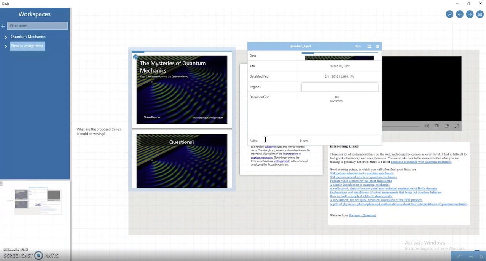
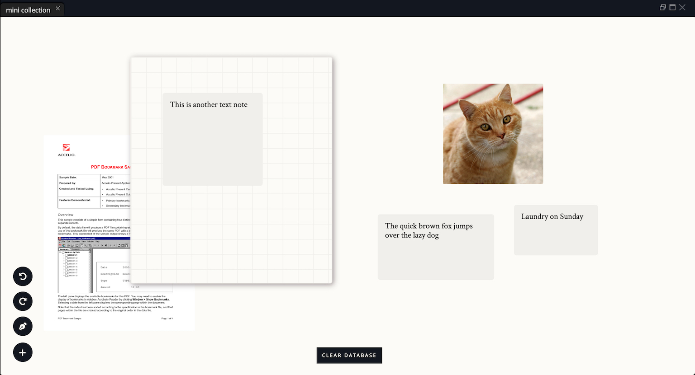
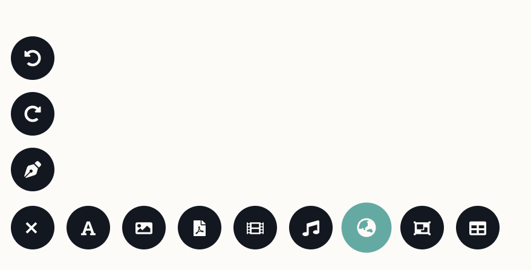
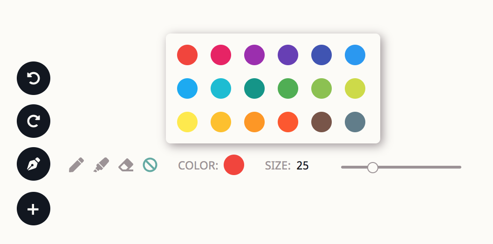

In the spring of 2019, my research lab migrated our project, Dash, from C# and the .NET framework to React and TypeScript. There were many reasons behind the move, but for me, it meant a new window of opportunity had opened up: since we were completely rewriting the codebase, it meant that I could redesign our entire UI.
Dash is a note-taking application geared towards organicness, with an infinite canvas and infinitely-layered collections for users to take notes in a freeform way. Our lab—which resembled more of a software development team—used rapid prototyping to test features and mock up proofs of concept. As such, as we added more and more features, their front-end counterparts ended up being squished into wherever the UI could fit them. A few months before the migration, the interface looked like this:
This was already after multiple attempts to clean up the UI over the summer, but at the end of the day, between our long context menus and the ambiguous mini-map and the design inconsistencies between different UI elements, it was time to start over from scratch. There were many important functions fundamental to the project itself—such as navigation, document manipulation, linking, and bringing up document properties—that required way too many strange interactions to successfully achieve that were also unintuitive and had little learnability.
I aimed for something simple and clean, inspired by other interfaces like Notion. Dash's purpose was a freeform workspace, like OneNote on an infinite canvas with inter-note linking capabilities. As such, I didn't want loud colors clouding the workspace when the user doesn't want any distractions beyond what they're collating on the workspace. I ended up with this design:
Note that I coincidentally used the same background color as my website, which is why the image might look like it has a transparent background. Also, the "Clear Database" button is there largely for testing purposes, as our back-end team was still putting finishing touches on the system.
I was aiming for simplicity whenever possible: the user doesn't need much to know that a document is an image, textbox, PDF, or other. Collections float with a drop shadow, which makes it apparent that they're an entirely different hierarchy. Instead of having menu-like items scattered across the frame of the workspace, I chose to condense it all in the bottom-left hand corner, which the user can expand as necessary:
One big problem we had with Old Dash was intuition, and many users expected to be able to add certain documents by just clicking an icon. However, they were actually supposed to drag the icon into the workspace. What I did in the redesign is to allow both gestures to perform the same action.
In Old Dash, we had big problems with toolbars. We initially had none, but then the context menu grew so crowded that we decided we had to have one, but then people began adding so many functions to the toolbar that it grew too large, and so we added secondary toolbars that expanded only when certain matching elements were clicked. All in all, I went with unobtrusive icons in this take of the toolbar. The + button turns into an x button when the full list of elements is shown, so users know how to close it anytime. Furthermore, hovering over each icon also reveals a tooltip describing what that button does, in case the actions aren't entirely understandable.
Not all the features had been implemented yet by the time I took these screencaps, such as search and and snapshots. However, the new path has been paved: one grounded in unobtrusiveness and intuitive organization. As a case study, around the same time as the general UI overhaul, another team member also worked on our inking tool: designing a new sub-toolbar for pen & touch usage, a key feature of Dash. It wasn't difficult to integrate her design into what I had in mind already for the UI, and React components made that much easier.
A few weeks after the redesign prototype was finished, I shifted into a UI/UX consultant role at the lab instead of as a software developer. This was to accommodate my new schedule, which had picked up with being a head teaching assistant for a large intro course (funnily enough, with the same professor). It was a long process that required a lot of synthesis of my past experience with Dash, and collecting other team members' feedback about where they thought certain elements should go. This exercise really brought out the important questions of our project: what do we want users to do with it, and how can we design an interface to best allow them to use our unique features? The redesign challenge was daunting, but I'm glad I took it on as one of my final tasks.